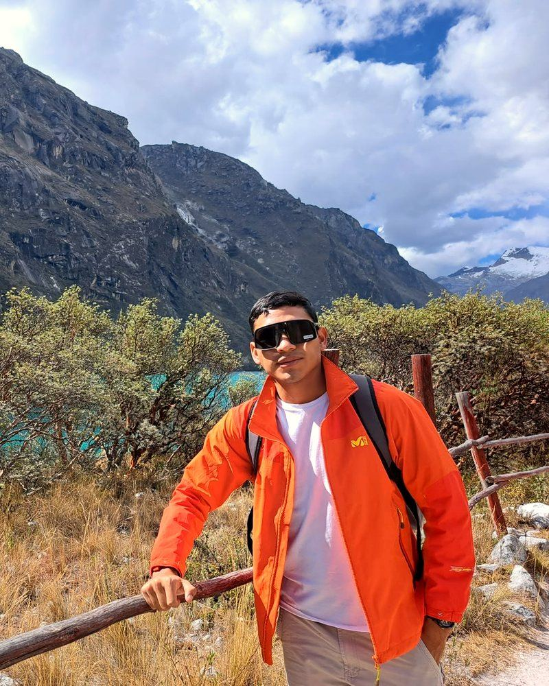

LARGA DISTANCIA100 g
Doypack con tapa
Blanco con degradado plateado y boquilla recerrable. Tómalo por partes en fondos, trail y ciclismo.
GEL DEPORTIVO · HECHO EN PERÚ
Más fuerte que
tus problemas.
Gel de carbohidratos para correr, pedalear y entrenar. Sin cafeína. Dos formatos, un solo estándar: el tuyo.
Quedan 100 de 100 dorsales OrigenCrear mi cuenta
MANIFIESTO
No hagas que los problemas sean más grandes que tú.
Cada entrenamiento tiene un kilómetro en el que quieres parar. SINCHI te acompaña en ese momento.
01 · FORMATOS
Cada formato está pensado para un momento distinto de tu entrenamiento.
Blanco con degradado plateado y boquilla recerrable. Tómalo por partes en fondos, trail y ciclismo.

Plateado a naranja eléctrico, delgado y ligero. Se abre con una mano por la muesca superior.
02 · NOVEDADES
Lanzamientos, carreras y eventos en Trujillo. Instala la app y no te pierdas nada.
Muy pronto publicaremos las primeras novedades.
03 · SEPARAR
Sin pago por ahora. Te escribimos cuando SINCHI esté disponible.
SEPARAR
04 · LA MARCA
Sinchi.
En quechua: fuerte, poderoso. Nacida en la costa norte del Perú, frente al mar de Salaverry, para quienes no se detienen.
Para el kilómetro donde todo pesa.
Como el mar de la costa norte: vuelve todos los días.
Hecho en La Libertad, Perú.
05 · NUESTRA HISTORIA
SINCHI nació en Salaverry, frente al mar, con una idea terca: que el gel que llevas en el bolsillo también podía hacerse aquí, pensado para quienes entrenan en el Perú.
Entrenar en el norte es salir de madrugada, con viento de mar y arena en las zapatillas. Es ese kilómetro en el que todo pesa y la cabeza te pide parar. Para ese kilómetro hicimos SINCHI: un gel de carbohidratos hecho en La Libertad, sin cafeína, en dos formatos para dos momentos distintos de tu entrenamiento.
No queremos ser un gel más. Queremos ser el que te acompaña cuando nadie te ve entrenar, el que te recuerda por qué empezaste. Por eso nuestro nombre significa fuerte en quechua, y por eso nuestra frase no es un eslogan: es una promesa.
Más fuerte que tus problemas.
Energía de carbohidratos sin estimulantes. Úsalo en un entrenamiento de noche, si eres sensible a la cafeína o si ya tomaste café antes de salir.
Lo hacemos en La Libertad, Perú, para el clima, las rutas y las carreras que tú corres. No es una marca de afuera adaptada: nació aquí.
Doypack de 100 g con tapa para las salidas largas. Sachet de 60 g que se abre con una mano para el día de competencia.
Con tu cuenta tienes tu dorsal del Club SINCHI, tus separaciones y las novedades de carreras y eventos en Trujillo.

EL FUNDADOR
“Quería un gel que se sintiera nuestro: hecho en el norte, sin cafeína y para gente que no se rinde. SINCHI es eso, y cada dorsal del club es alguien que decidió no detenerse.”
Ansony Romero
Fundador de SINCHI · Salaverry, Perú
06 · REDES
Carreras, entrenamientos y lanzamientos en Trujillo. Todo lo nuevo de SINCHI sale primero en nuestras redes.
07 · PREGUNTAS
¿No encuentras tu respuesta? Escríbenos por WhatsApp y te respondemos.
970 567 719Un gel de carbohidratos para deportistas, hecho en Salaverry, La Libertad. Está pensado para correr, pedalear y entrenar, y no tiene cafeína.
No. SINCHI es energía de carbohidratos sin estimulantes, así que puedes usarlo en entrenamientos de noche o si eres sensible a la cafeína.
El doypack de 100 g tiene tapa recerrable y se toma por partes en salidas largas, trail y ciclismo. El sachet de 60 g es delgado y se abre con una mano por la muesca superior, ideal para el día de competencia.
El lanzamiento será en Trujillo. Separa el tuyo o únete a la lista de acceso anticipado y te avisamos antes que a nadie.
No. Separar no cuesta nada hoy. Te escribimos cuando SINCHI esté disponible para coordinar tu pedido.
Cuando creas tu cuenta recibes tu dorsal del Club SINCHI con un número de miembro. Los primeros 100 miembros reciben la edición negra Origen, con número cromado. Después del 100, el dorsal es plateado.
Muy pronto publicaremos la guía de uso con la ficha nutricional completa. Como con cualquier gel, pruébalo primero en un entrenamiento y no por primera vez el día de tu carrera.